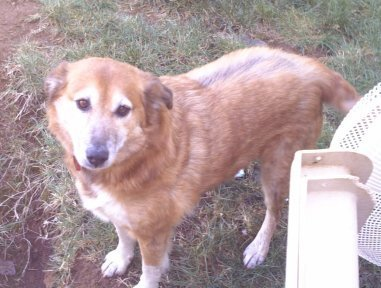

[Previous entry: "Law enforcement and libraries -- an American Library Assn. survey"] [Main Index] [Next entry: "British government to sell national ID data"]
06/26/2005 Archived Entry: "A success story"

I THOUGHT, IN THIS TIME OF GLOOM AND CONSTANT BAD NEWS, That it would be nice to show a small success story. The dog above is Suki, a feral rescue dog who came into my life on Memorial Day weekend, 2004.
Here's what she looked like at the vet's office the day my friend Ken and I brought her in on an improvised blanket stretcher. (Click only if you think you can handle it -- and then remember that she smelled even worse than she looked.)
And here's my favorite photo showing a typical moment in the oh-so-tough life Suki endures today.
You can see she's still not quite as furry as she ought to be. And she's still semi-wild and easily frightened. But on those days when it seems life has been in vain, it's encouraging to look at Suki and say, "Well, at least I've done one good and worthwhile thing."
Posted by Claire @ 04:10 PM CST
Link